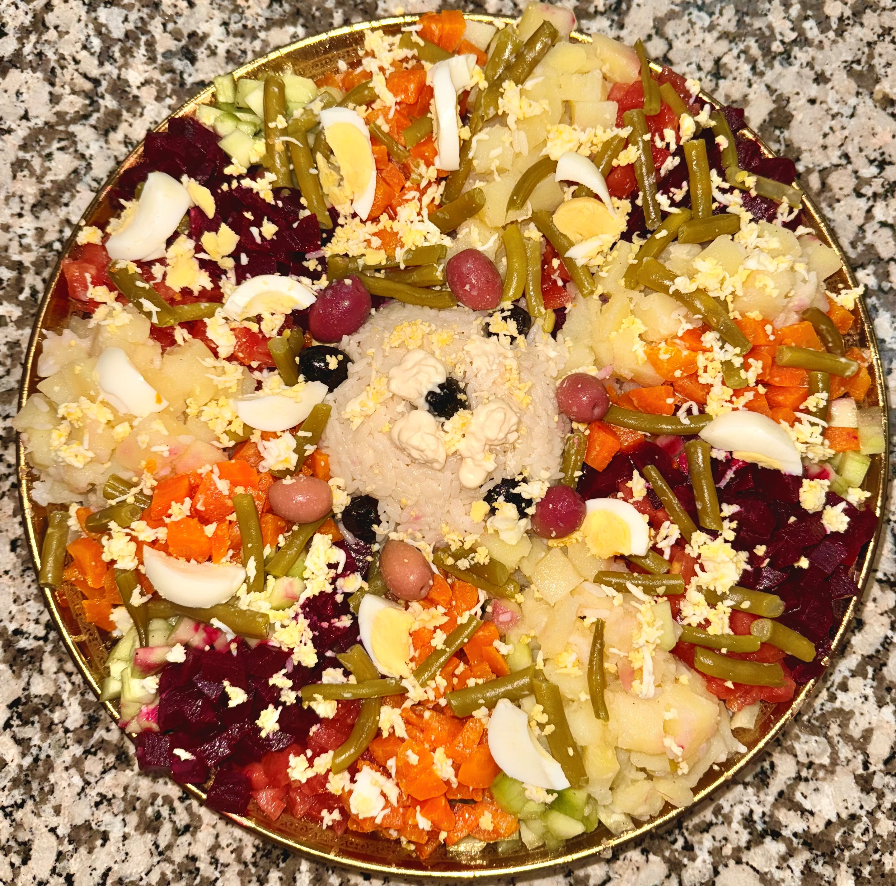
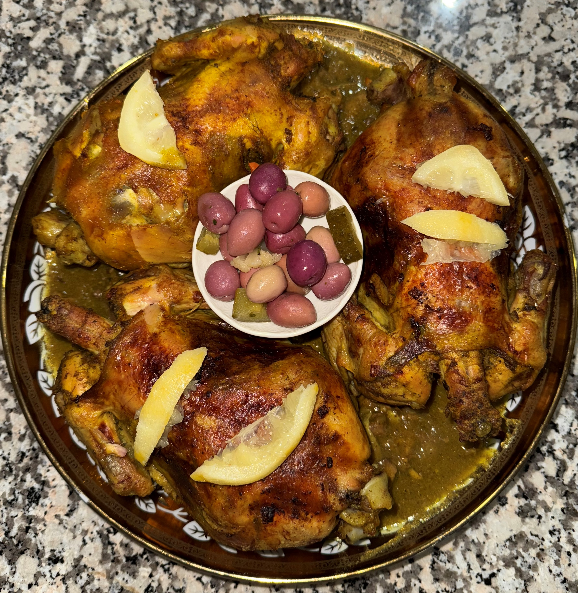
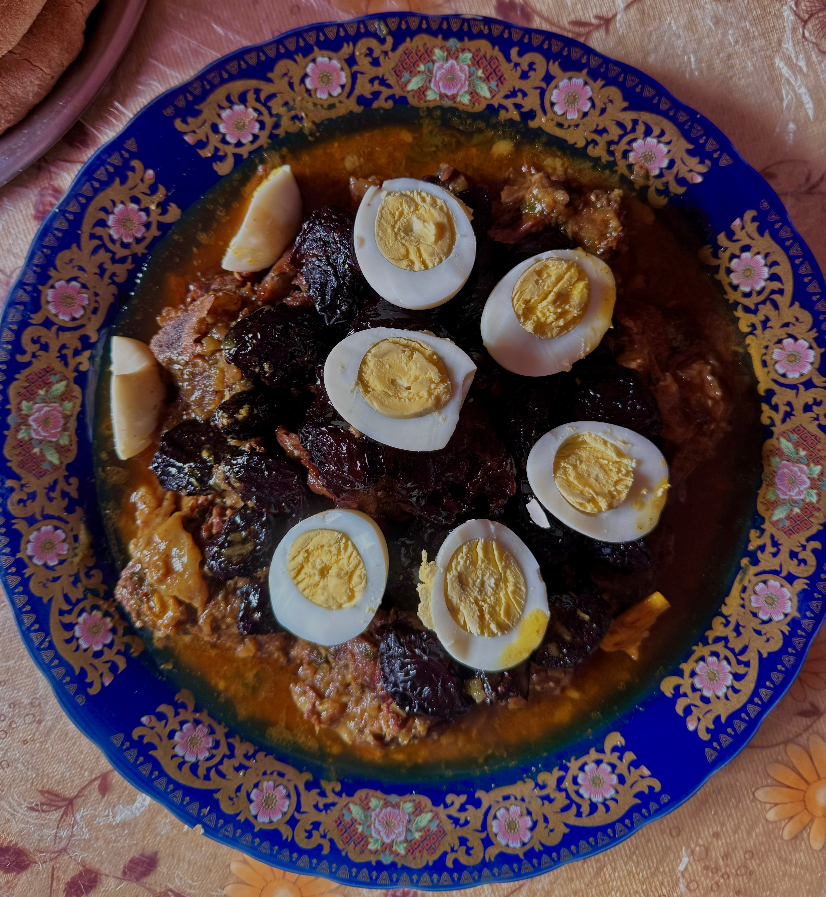
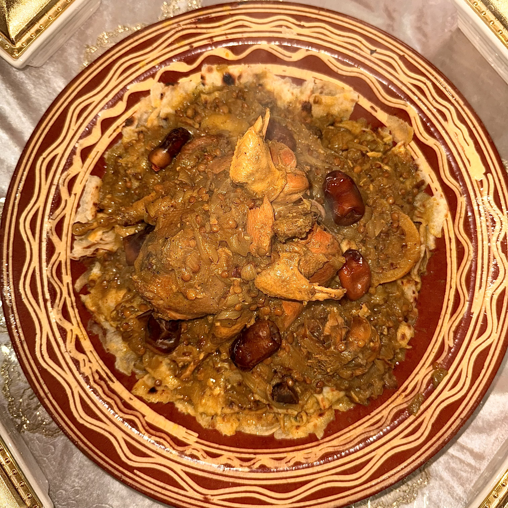
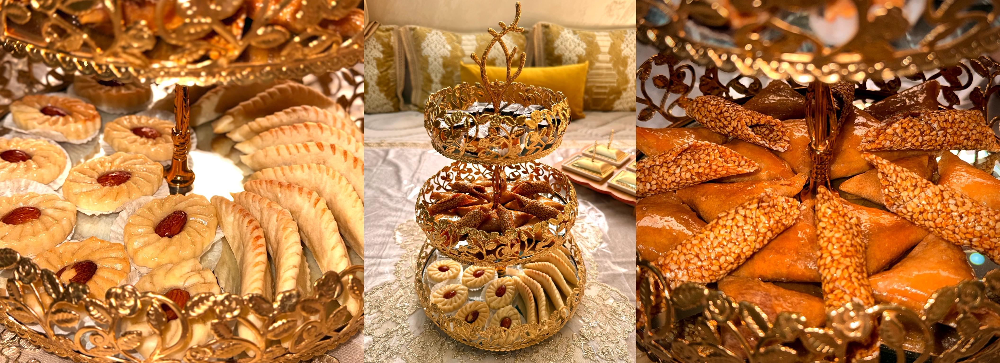
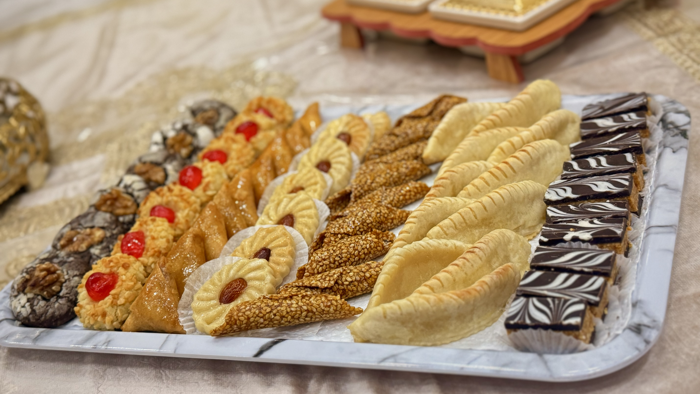
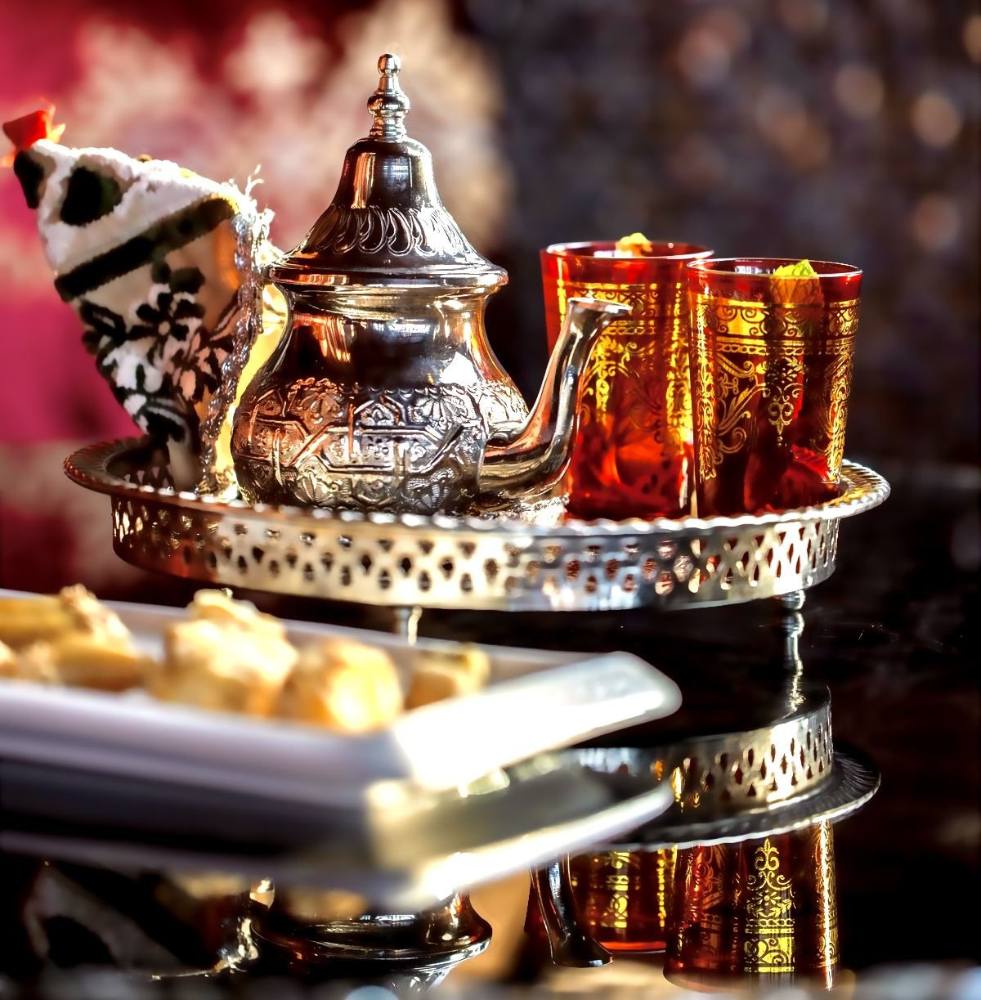

Spécialités culinaires marocaines communes
Le Maroc est un pays riche en traditions culinaires, où chaque région offre des spécialités qui reflètent les influences culturelles, historiques et géographiques du pays. Cependant, certains plats transcendent les frontières régionales et sont associés à des événements importants et à des célébrations dans tout le royaume. Parmi ces plats, le Dajaj Mhammar (poulet rôti épicé) et le Lham Barqouq (agneau aux pruneaux) sont des incontournables qui figurent dans les festins traditionnels, qu'ils soient pour un mariage, une naissance, un anniversaire, ou toute autre occasion spéciale.
Salade marocaine
Au Maroc, la salade marocaine est bien plus qu’un simple plat : c’est une tradition culinaire profondément ancrée dans le quotidien et les grandes occasions. Que ce soit lors d’un déjeuner ou d’un dîner, elle occupe une place centrale à table, symbolisant la fraîcheur, le partage et la convivialité. Grâce à sa simplicité et à ses ingrédients sains et naturels, elle accompagne la plupart des plats traditionnels. Cette recette classique met en avant les légumes frais et les épices aromatiques typiques du Maghreb, tout en apportant une touche de fraîcheur essentielle à chaque repas.
La salade marocaine est similaire partout au Maghreb, mais chaque région ajoute ses touches uniques, ce qui la rend riche et variée. Parmi les points forts de cette recette, elle rend tout repas plus convivial et équilibré. Elle est pleine de vitamines, d’antioxydants et de fibres, des nutriments qui proviennent des tomates, poivrons, oignons et herbes.
Dajaj Mhammar ou Poulet Rôti
Le djaj mhammar, accompagné de sa sauce daghmira, occupe une place centrale dans la cuisine marocaine, l’une des plus variées au monde. Ce plat reflète avant tout une histoire riche en échanges culturels. Ce poulet rôti, servi lors des grandes occasions et des célébrations, incarne la richesse du patrimoine culinaire marocain, avec une fusion de traditions berbères, arabes, andalouses et même subsahariennes.
La sauce daghmira est un élément essentiel de ce plat. C’est une sauce concentrée en saveurs, alliant épices et herbes. Elle est généralement préparée avec de la coriandre, des oignons, du paprika, du cumin et du citron confit, offrant un goût acidulé qui sublime la tendreté et le fondant du poulet.
Le Maroc est reconnu pour sa tradition d’hospitalité, où recevoir ses invités avec les meilleurs plats est une priorité, et le djaj mhammar est souvent au cœur de cette tradition.
Lham bel Barqoq ou Viande d'agneau aux pruneaux sucrée
Le tajine de bœuf aux pruneaux est un plat qui offre un aperçu alléchant de la riche diversité de la cuisine marocaine. Il est constitué de tendres morceaux de bœuf, marinés à la perfection et affinés avec un mélange d’épices. Ce plat combine les saveurs sucrées et salées dans un équilibre parfait et est souvent servi lors des grandes occasions, telles que les mariages ou le Ramadan. Le bœuf, cuit lentement avec des épices comme la cannelle, le gingembre et le curcuma, se mêle aux pruneaux tendres qui apportent une touche sucrée. La réussite de ce plat dépend essentiellement du mode de cuisson, qui doit être lente afin que tous les ingrédients entremêlent leurs parfums.
Couscous
Le couscous, symbole de convivialité et de partage. Récemment inscrit au patrimoine culturel immatériel de l'UNESCO, ce plat emblématique d'origine berbère se compose de semoule de blé accompagnée de bœuf, de mouton, parfois de poulet, ainsi que de légumes et de légumineuses. Traditionnellement, il est dégusté le vendredi midi, après la prière du Dhur.

RFISSA
La Rfissa marocaine, également appelée Trid, fait partie intégrante des traditions culinaires du Maroc. Ce plat riche et savoureux est préparé à base de Msemen (petites crêpes marocaines feuilletées coupées en morceaux), de bouillon de lentilles et d’un mélange d’épices parfumées, telles que le gingembre, la coriandre, le safran, le ras el hanout et le fenugrec, avec du poulet, du Perdrix ou de la caille. Ces ingrédients apportent à la fois une richesse gustative et un bienfait nutritionnel, ce qui en fait un plat particulièrement apprécié lors de certaines occasions spéciales.
Traditionnellement, la Rfissa est préparée lors d’événements très spécifiques, notamment lors d’une naissance, afin de permettre à la mère de retrouver ses forces après l’accouchement. Ce plat joue un rôle symbolique et pratique en apportant des bienfaits énergétiques, en renforçant le système immunitaire et en reconstituant les réserves de la nouvelle maman.
Cette tradition est pratiquée dans la majorité des foyers marocains, quelle que soit la région du pays. La préparation de la Rfissa est un moment important de rassemblement familial, où les proches se réunissent pour célébrer la naissance et apporter soutien et réconfort à la mère. Cette tradition de partage et de solidarité rend le plat encore plus significatif.
Gateaux marocains
Les gâteaux marocains, souvent appelés pâtisseries marocaines, sont préparés avec soin et se distinguent par leur diversité et leur raffinement. Ils sont généralement servis lors de grandes occasions comme les mariages, les fêtes religieuses (Aïd al-Fitr, Aïd al-Adha), ou pour recevoir des invités. Parmi ces patisseries, on trouve les les Cornes de Gazelle (Kaab el Ghazal), les Briouates, Le Ghriba, Les chebakias,etc.
 Thé marocain
Le thé à la menthe marocain est bien plus qu’une simple boisson, c’est une tradition sociale et culturelle. Offrir un thé à la menthe Chez les marocains est un signe de bienvenue et d’hospitalité, il est toujours servi chaud, quelle que soit la saison. Le thé à la menthe et les gateaux marocains marocains se marient parfaitement. Cette association est un incontournable lors des moments de convicialité, tels que, les visites entre amis ou famille, les grandes cérémonies traditionnelles, les journées de Ramadan.etc.
